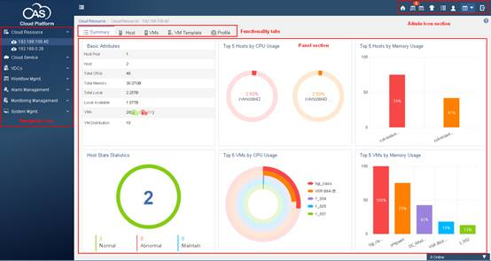

Cloud Automation System (CAS) provides virtualization, cloud service operations and management for cloud data centers. With CAS, the administrators can manage physical and virtual resources to construct cloud computing infrastructure efficiently with ease.
CAS contains the following components:
Cloud Virtualization Kernel (CVK)
CVK isolates the guest operating systems (OSs) and applications on virtual machines (VMs) from the underlying hardware. The guest OSs accesses the infrastructure through CVK without having to concern about the varieties and complexities in hardware. CVK is essential to the performance of CAS in hardware compatibility, high reliability, scalability, and performance optimization in a virtual environment.
Cloud Virtualization Manager (CVM)
CVM provides virtualization of computing, network, and storage resources in the data center as well as automated services for upper layer applications. CVM provides the following services:
Virtual computing, networks, and storage.
High availability.
Dynamic resource scheduling (DRS).
VM backup and disaster recovery.
VM template management.
Cluster file system.
Virtual switch (vSwitch) policies.
Cloud Intelligence Center (CIC)
CIC provides pooling of infrastructure resources (including computing, networks, and storage) and policies and orchestrates the resources to fulfil user application tasks. You can use CIC to build a secure hybrid cloud on which tenants can subscribe to resources on demand. CIC provides the following services:
Organization-based virtual data centers.
Data and business service for multitenancy.
Cloud service workflows.
Self-service portal.
OpenStack-compatible RESTful APIs.
SSV self-service portal
SSV provides business-centric IT as a service (ITaaS). Users can subscribe to cloud hosts, hardware, and networks as needed by using a cloud service workflow, and then access the cloud hosts assigned to them through a remote connection protocol such as RDP or VNC.
This help focuses on CIC.
CIC provides the following features and functionalities:
Manage cloud resources: vCenter cloud resource management is focused on external cloud resources including VMs and VM templates.
Manage cloud services: Manages the provisioned cloud hosts, cloud disks, cloud backup data for service subscribers, cloud security, and cloud rainbow service.
Manage VDC: Manages resource pools, organizations, users, and virtual desktop pools.
Workflow management: Manages workflows (including cloud host tasks, cloud disk tasks, user preregistration tasks, and cloud backup policy tasks), workflow customization (workflow design), cloud messaging, and support tickets.
Alarm management: Manages alarm settings, notification templates, and displays alarm statistics.
Monitoring management: Manages statistical reports and custom monitors.
System management: Manages system settings and access permissions, including operators, password policy, access policy, CIC backup configuration, operation log, log files, LDAP user synchronization, and licenses.
The following is the webpage layout of CIC:

Admin icon section: Provides access to basic administrative information or functionalities, including the homepage, login user, webpage skin (visual style), task console, help system, technical forum, download link, version information, and logout link.
Navigation tree: Contains menus of all features and functionalities. If you select one menu item, the right panel section displays the work pane for that item.
Functionality tabs: Provides access to different management functionalities and tasks.